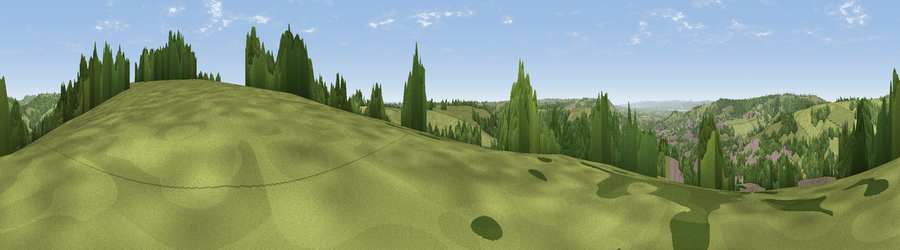

Viewpoint near Thrupp
#17787 in England · top 29% of its area beats it · near Thrupp · access?Where it is
The exact computed spot (SO 87075 05275). Click the marker for map links.
Public access: no public right of way or access land is recorded at this exact spot — it may be on private land. Computed from Natural England's CRoW access layer and OpenStreetMap rights of way — not the legal definitive map. Always verify locally.
The view, rendered

A 360° render of this exact spot computed from the terrain model, tree cover and land cover — summer colours, afternoon light, calibrated against photographs of famous viewpoints. Real trees, hedges and buildings will differ in detail.
The panorama
Grey silhouette: terrain skyline in each direction (720 bearings, Earth curvature and refraction included). Dashed green: skyline with trees (+15 m) and buildings (+8 m) as obstacles. Blue strip: how far the ground is visible on each bearing.
Where the view opens
Wedge length = distance to the farthest visible ground on that bearing (vegetation-aware). Rings at 10, 25 and 50 km.
What fills the view
46% grassland · 42% woodland · 8% built-up · 3% cropland
Angular shares of the visible panorama (visual magnitude), not map area. Landscape diversity 0.46 (0–1 Shannon).
Key numbers
More beautiful places nearby
The staircase of upgrades: each row has a higher view potential than everything closer. Driving times are estimates from straight-line distance, calibrated against real road routing — check an actual route before setting out.
| Place | Direction | Drive | Score |
|---|---|---|---|
| Viewpoint near Sheepscombe | NNE · 5 km | ~10 min | 54.8 |
| Viewpoint near Selsley | WSW · 5 km | ~11 min | 73.5 |
| Viewpoint near Randwick | WNW · 5 km | ~11 min | 73.7 |
| Viewpoint near Harescombe | NW · 6 km | ~12 min | 74.1 |
| Haresfield Beacon | NW · 6 km | ~13 min | 75.7 |
| Painswick Beacon | N · 7 km | ~14 min | 79.6 |
| Viewpoint near Great Witcombe | NNE · 10 km | ~19 min | 80.5 |
| Nottingham Hill | NNE · 26 km | ~41 min | 80.9 |
51.74602, -2.18861 · source: screening · position refined by local search. Computed location — check access rights before visiting.